12 объектов по утверждённому арту
Настоящие рендеры Unity. Модели подготовлены для просмотра и ещё не перенесены на игровую карту.
1 единица = 1 метр. Статическое окружение без интерьеров, коллайдеров и игровой логики. Стёкла остановки и теплицы прозрачные.
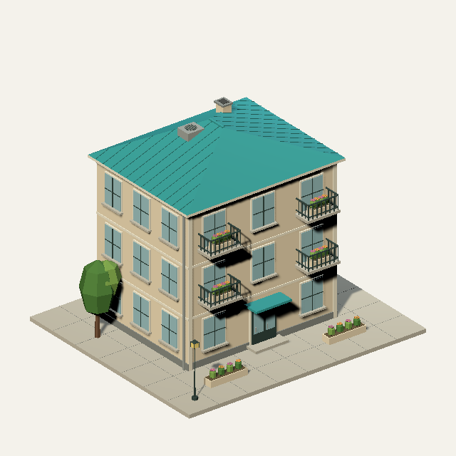
01 · Жилой дом9518 треугольников · 16 × 12 × 14 м · материалов: 1Модель OBJВид сзади
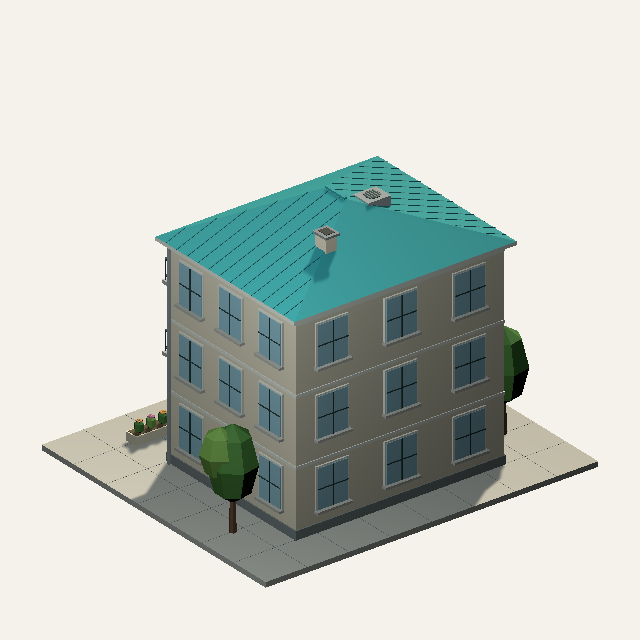
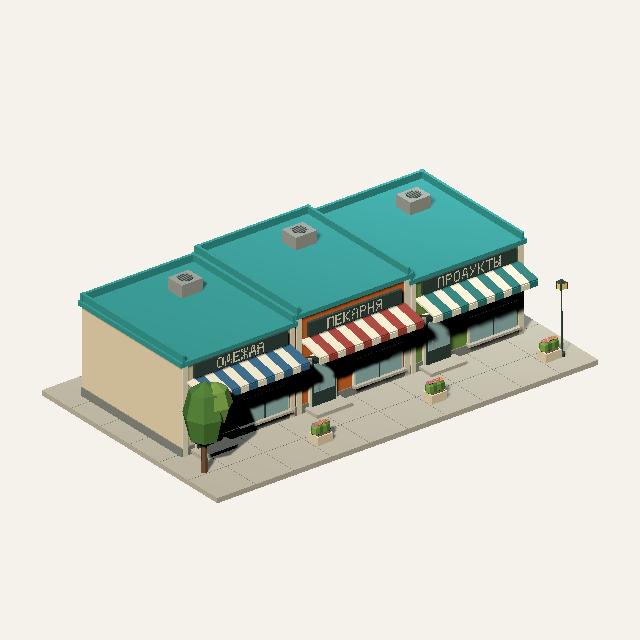
02 · Торговый ряд5572 треугольников · 20 × 5.7 × 12 м · материалов: 1Модель OBJВид сзади
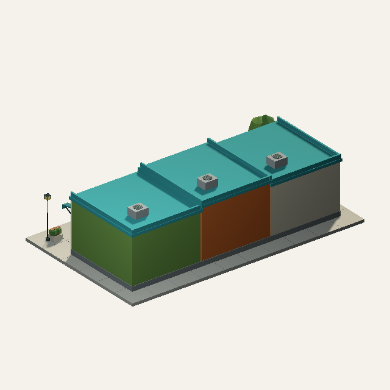
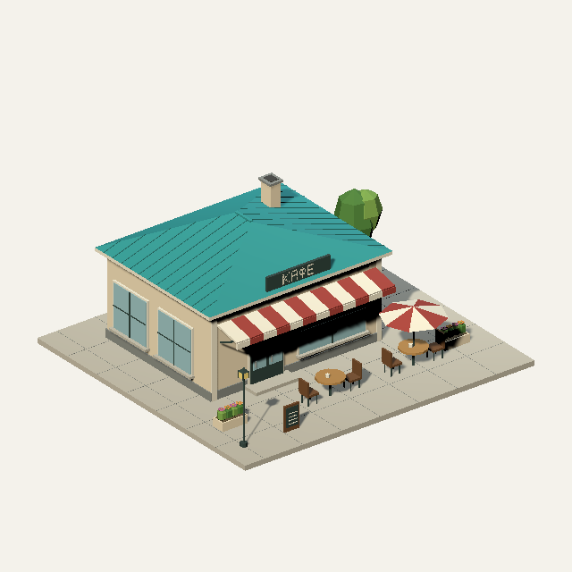
03 · Кафе4052 треугольников · 15 × 6.4 × 14 м · материалов: 1Модель OBJВид сзади
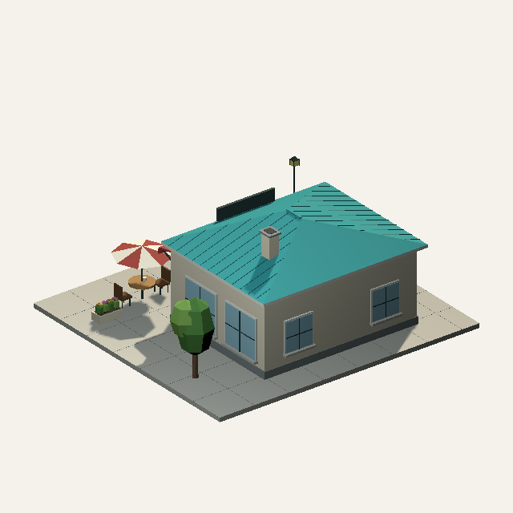
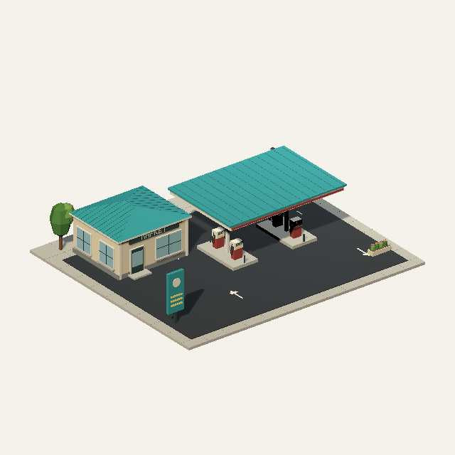
04 · Заправка3494 треугольников · 24 × 5.7 × 21 м · материалов: 1Модель OBJВид сзади
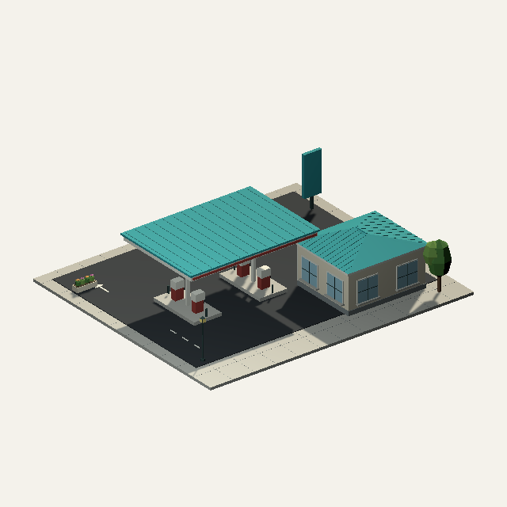
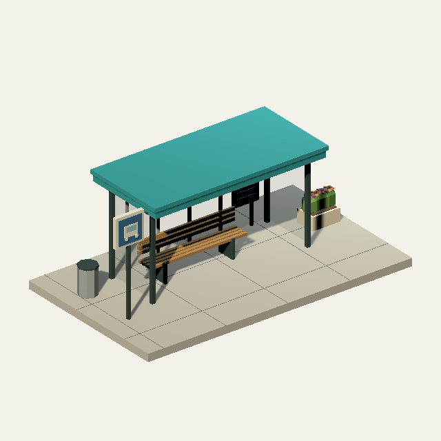
05 · Остановка1466 треугольников · 8.5 × 3.3 × 5 м · материалов: 2Модель OBJВид сзади
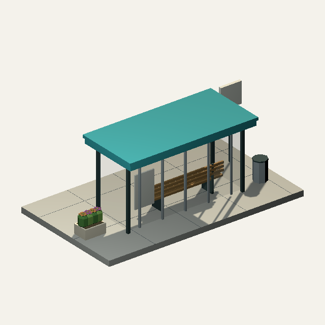
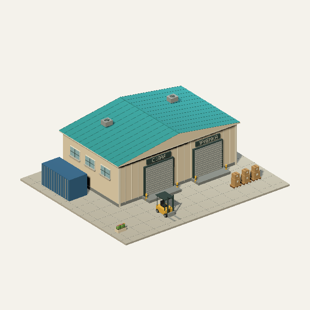
06 · Городской склад4574 треугольников · 25 × 7.7 × 21 м · материалов: 1Модель OBJВид сзади
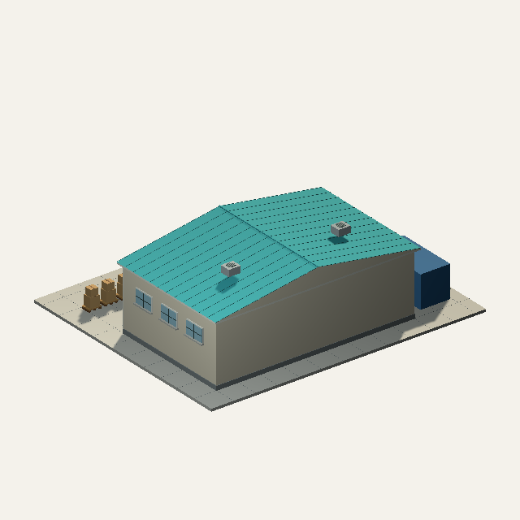
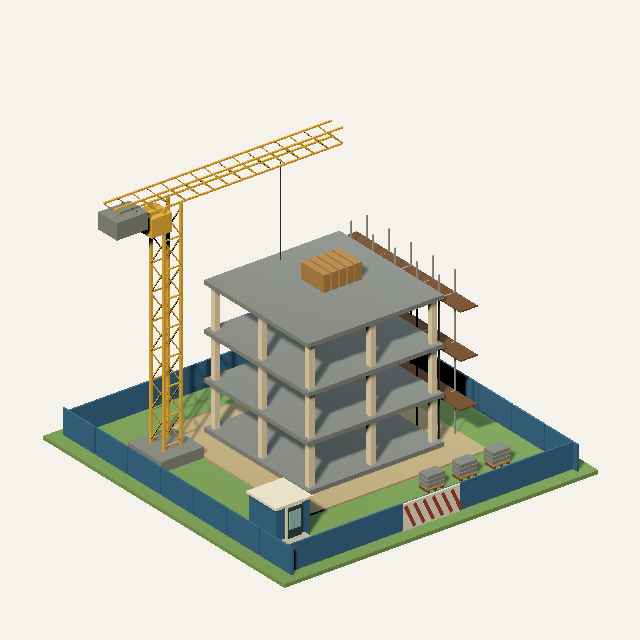
07 · Стройплощадка2960 треугольников · 22.1 × 17.3 × 22 м · материалов: 1Модель OBJВид сзади
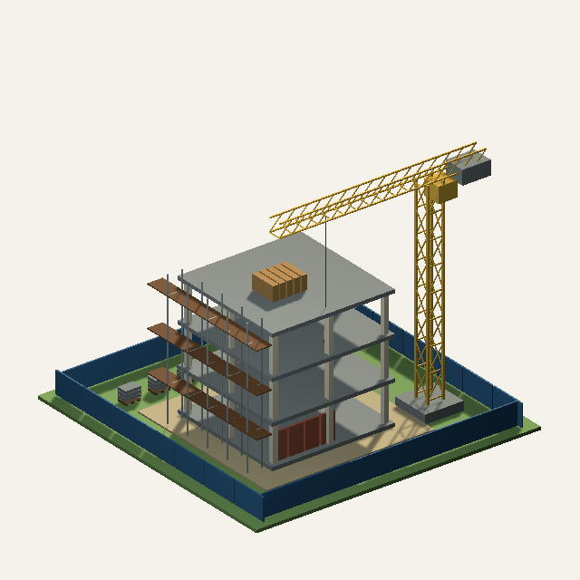
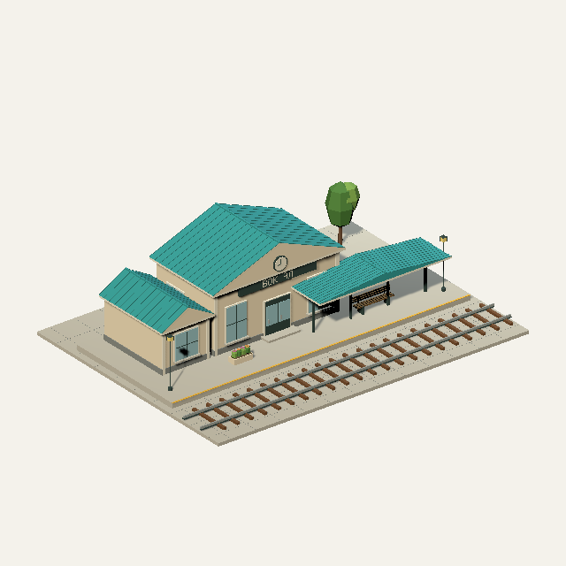
08 · Железнодорожная станция4028 треугольников · 25 × 7.4 × 19 м · материалов: 1Модель OBJВид сзади
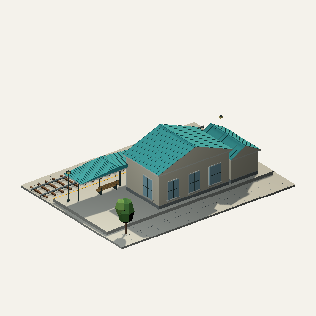
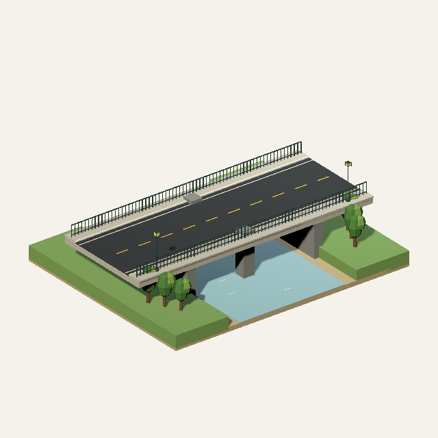
09 · Мост3176 треугольников · 22 × 7.5 × 18 м · материалов: 1Модель OBJВид сзади
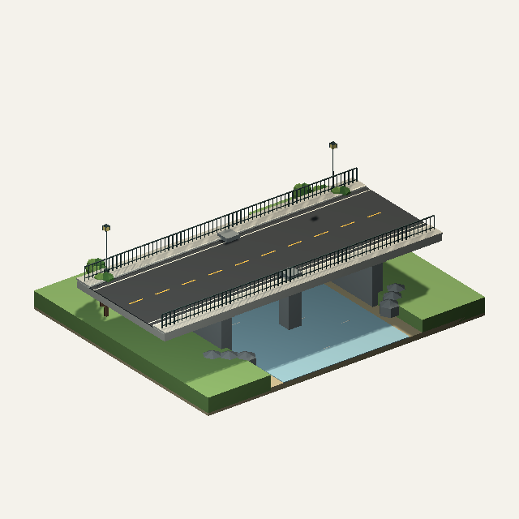
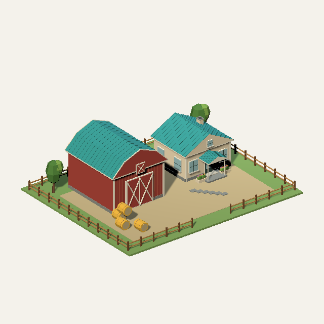
10 · Ферма: дом и амбар6272 треугольников · 27 × 8.3 × 22 м · материалов: 1Модель OBJВид сзади
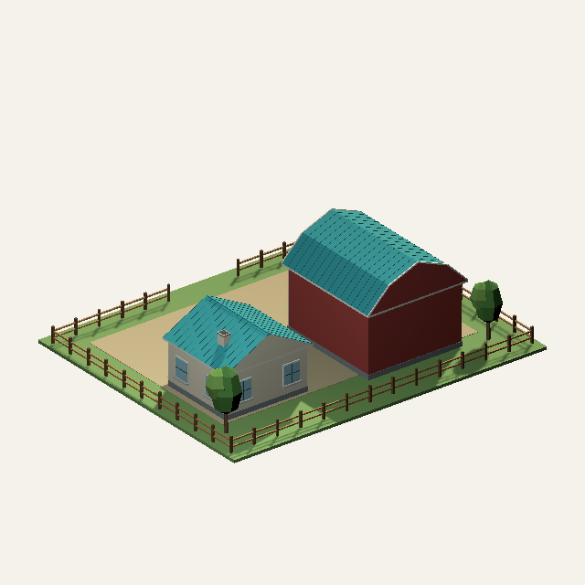
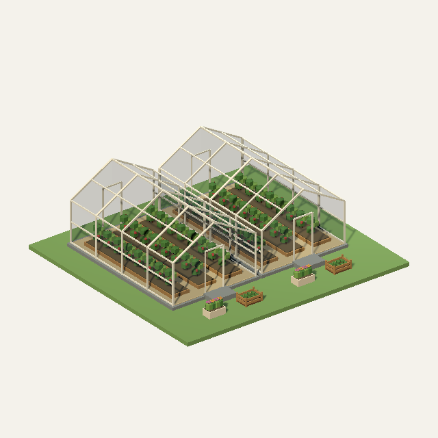
11 · Теплица8672 треугольников · 15 × 4.7 × 14 м · материалов: 2Модель OBJВид сзади
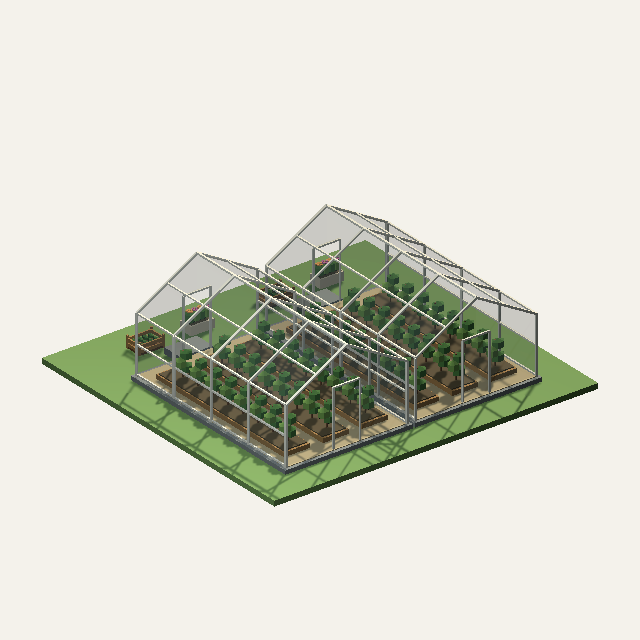
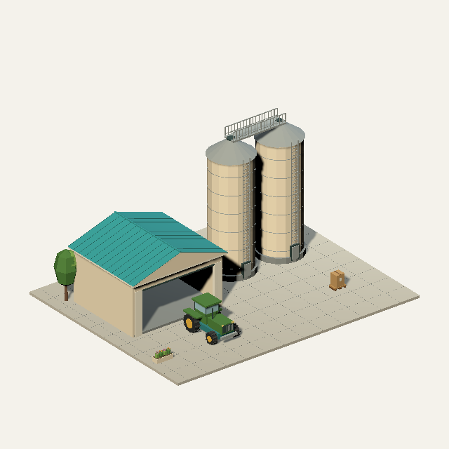
12 · Силос и гараж5564 треугольников · 25 × 13.3 × 20 м · материалов: 1Модель OBJВид сзади
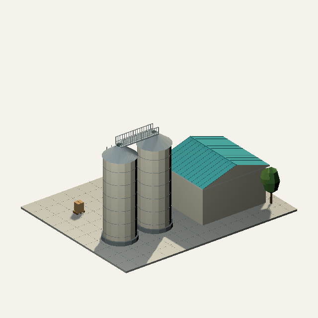